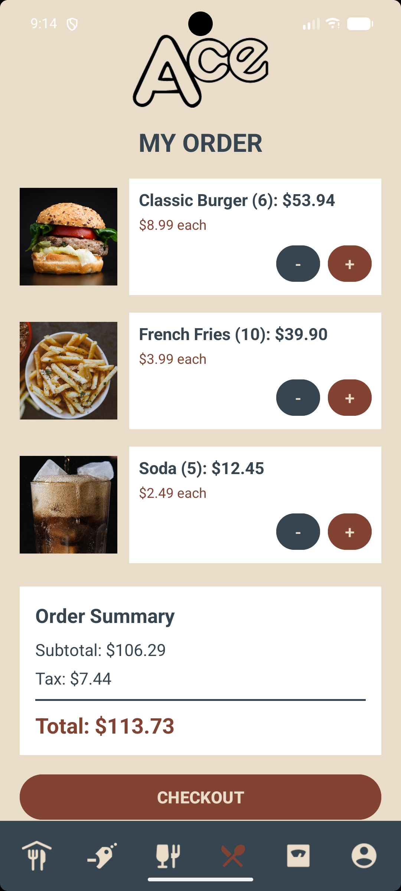
UX/UI · Mobile Application
Ace Restaurant
A mobile restaurant experience developed from wireframes through final interface design, including menu browsing, ordering, nutrition information, deals, and account management.
View case studyDesign + UX + Technology
Explore my work in UX/UI, web design, visual communication, editorial design, photography, and software and information technology.
User-centered experiences
Mobile and responsive experiences developed through wireframes, information hierarchy, interaction design, accessibility, and user-focused interface decisions.

UX/UI · Mobile Application
A mobile restaurant experience developed from wireframes through final interface design, including menu browsing, ordering, nutrition information, deals, and account management.
View case study
UX/UI · E-commerce
An e-commerce florist experience developed through wireframes, responsive layouts, visual hierarchy, and customer-focused shopping flows.
View case study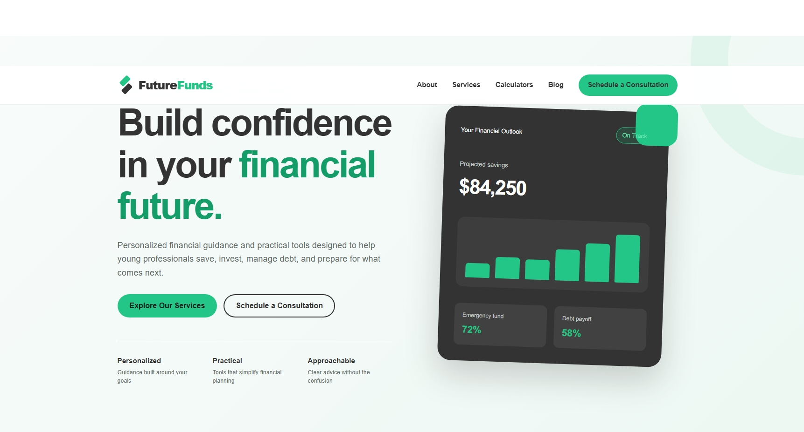
UX/UI · Responsive Web Design
A responsive financial-planning experience designed to make financial information and services more approachable for young professionals.
View case studyResponsive digital experiences
Landing pages, web content, information architecture, and responsive website design.
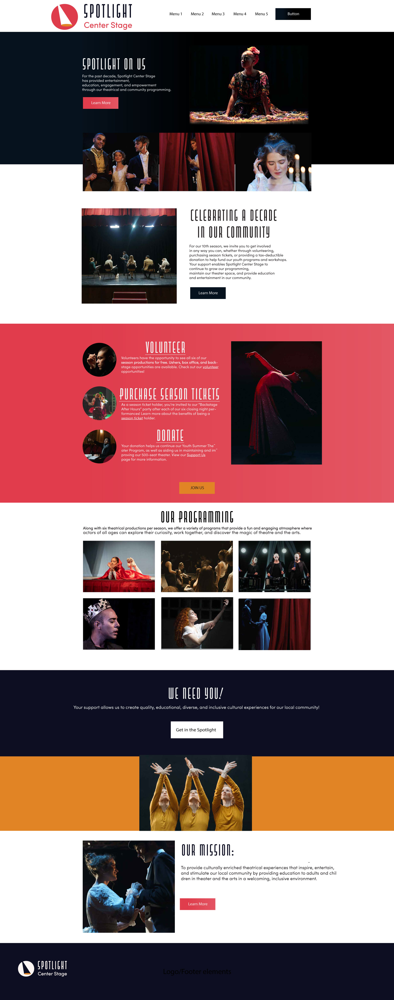
Web · Integrated Campaign
A landing page and coordinated campaign encouraging community support for a theater organization.
View project
Web · Digital Campaign
A festival landing page supported by email, social, and display advertising.
View project
Web · HTML and CSS
A multi-page interiors website developed with HTML, CSS, responsive layouts, and branded content.
View projectCampaigns and visual communication
Branding, advertising, social media, motion, typography, and integrated campaign design.
Integrated Campaign
Digital advertisements and motion graphics for a community race.

Integrated Campaign
Print, digital, social, and animated advertising promoting sustainable meals and community support.
View project
Brand Strategy · Social Media Campaign
A brand-consistency and social media campaign developed for a growing brick-oven pizzeria, including brand analysis, visual guidelines, cross-platform social concepts, and online-ordering promotions.
View case study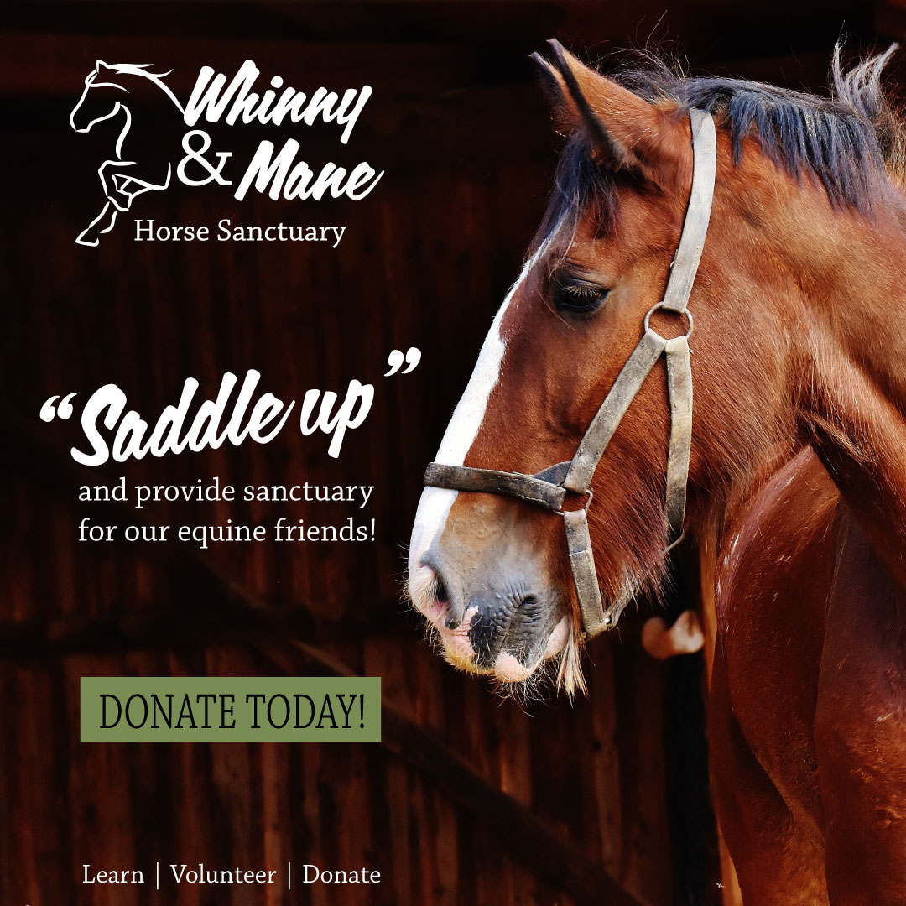
Nonprofit Campaign · Social Media
A cross-platform nonprofit campaign using audience strategy, emotional storytelling, static advertising, and short-form video to encourage donations and volunteering.
View case study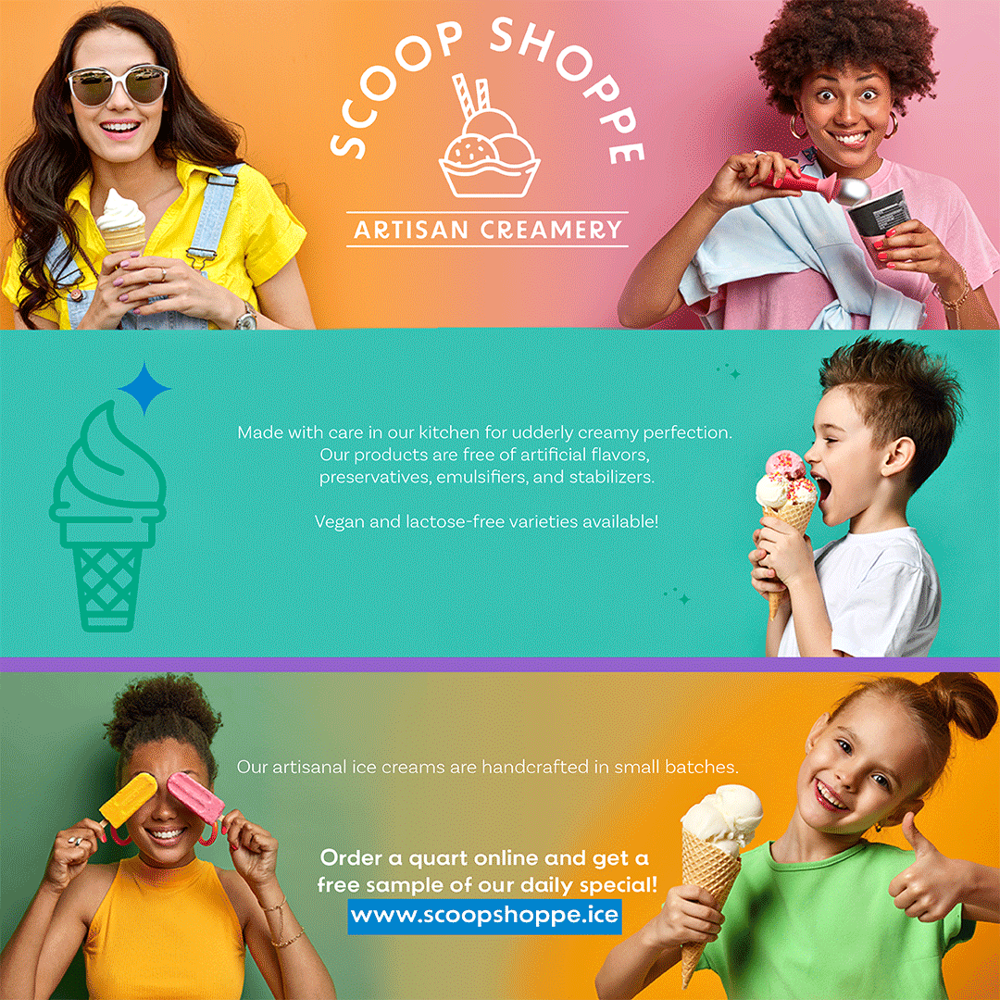
Branding · Graphic Design
Your existing Scoop Shoppe project description stays here.
View full artwork →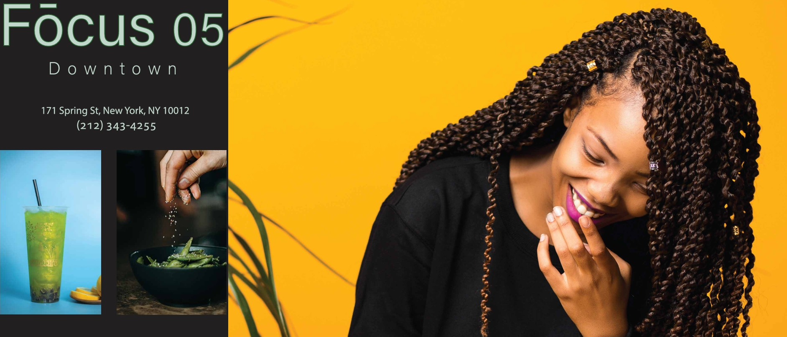
Environmental Advertising
A large-format advertising concept designed for a public-transit setting.
View full artwork →Publication and layout design
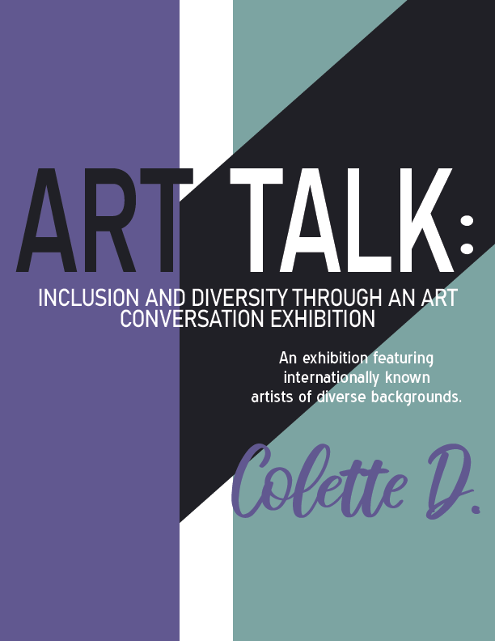
Editorial Design
A multi-page exhibition publication exploring inclusion and diversity through contemporary art.
View project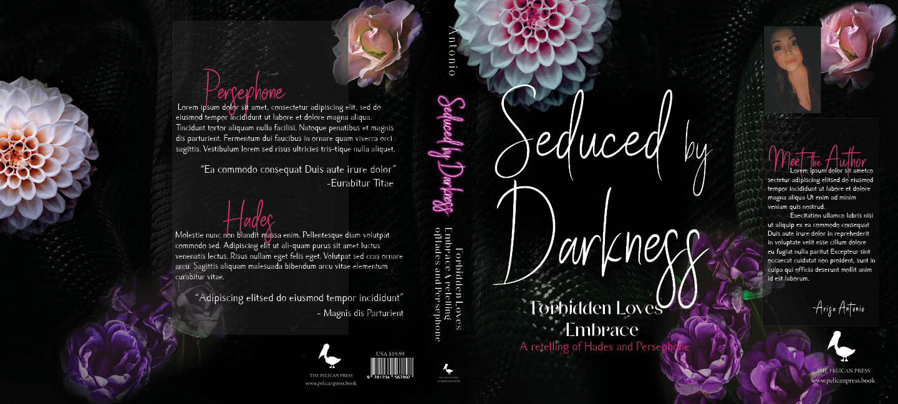
Book-Cover Design
A conceptual front-cover, spine, and back-cover design system.
View full artworkSystems and technical projects
Application development, systems analysis, database design, networking, and technical architecture.
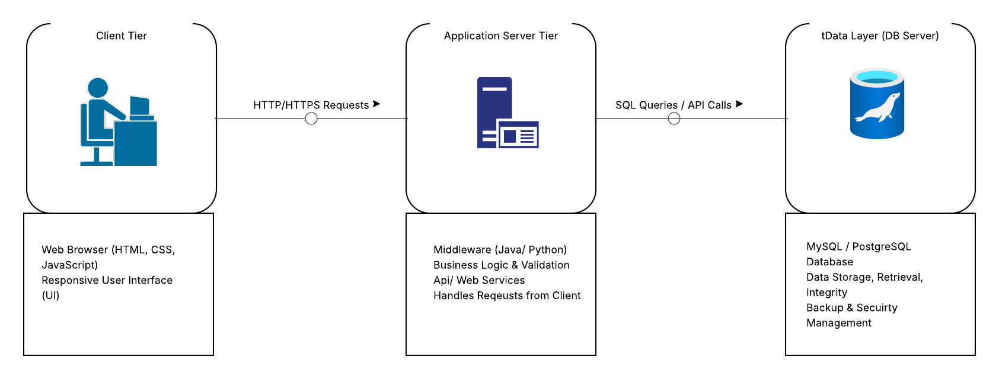
Systems Analysis · Information Systems
A comprehensive systems proposal covering requirements analysis, project planning, three-tier architecture, UML, data modeling, workflows, accessibility, and responsive interface design.
View case study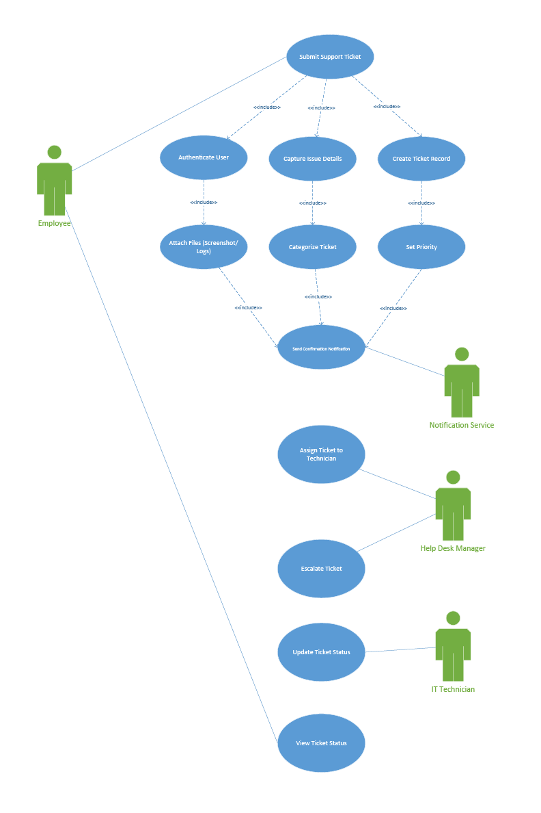
Systems Analysis · UML
A systems-analysis project modeling IT support workflows, application interactions, use cases, and object-oriented system architecture.
View case study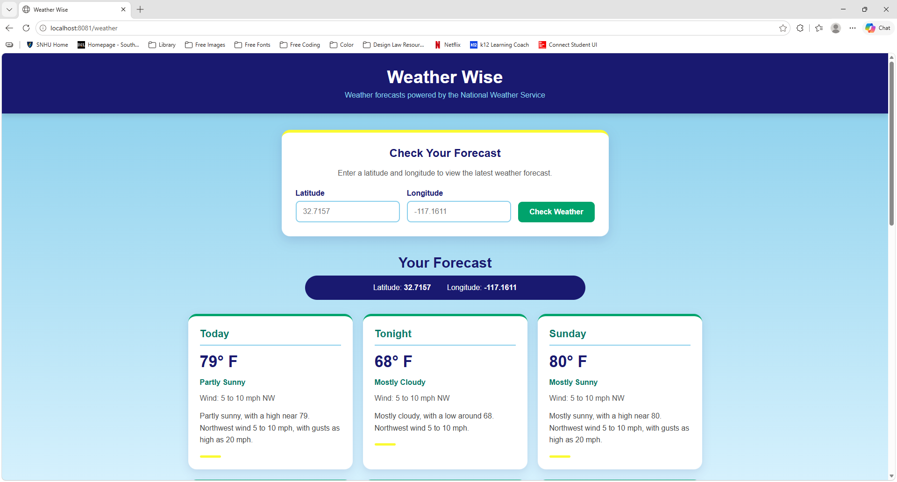
Application Development · Java
A responsive Java and Spring Boot web application that retrieves live forecast data from the National Weather Service through REST API integration.
View case study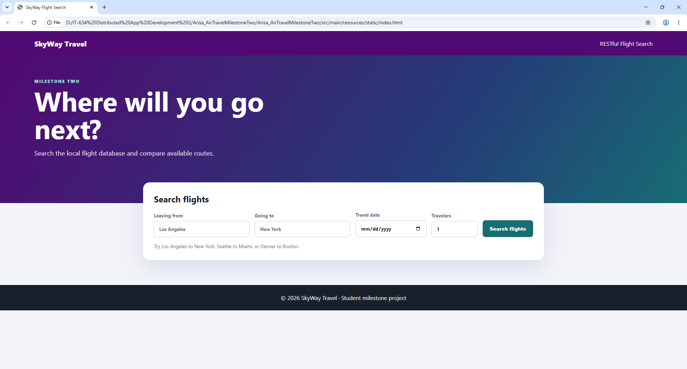
Application Development · Distributed Systems
An evolving Java and Spring Boot travel application using RESTful services for flight search, with database integration, booking, and user authentication being added as the project progresses.
View case study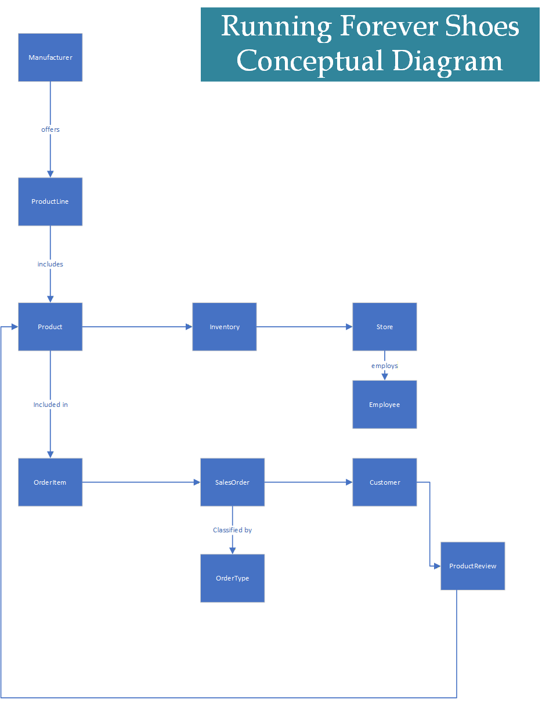
Database Design · Data Modeling
An evolving relational database project translating retail business requirements into conceptual, logical, and physical data models for products, inventory, customers, orders, employees, and reviews.
View case study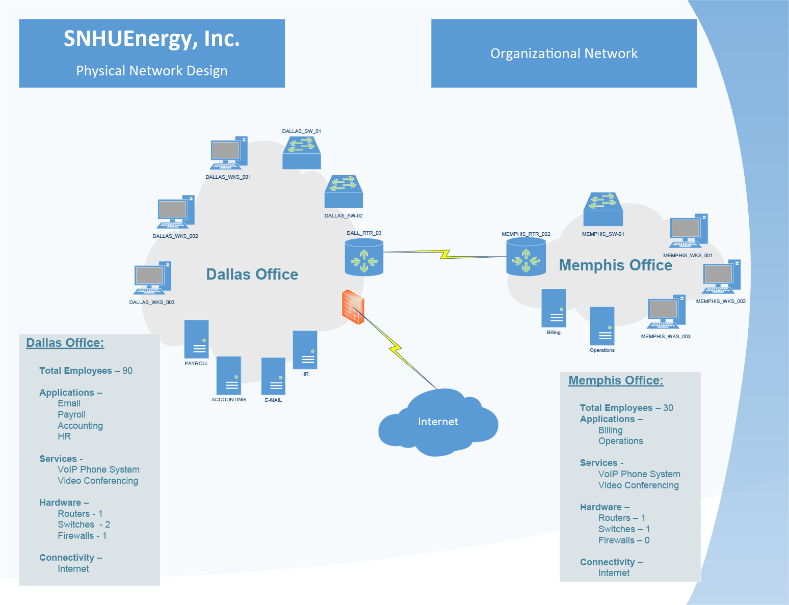
Network Architecture · Systems Analysis
A network architecture evaluation analyzing traffic, security, performance, and communication between two offices, followed by a future-state infrastructure recommendation.
View case studyOriginal imagery
A curated selection of photographs personally photographed and edited by Anne Amor.
View photography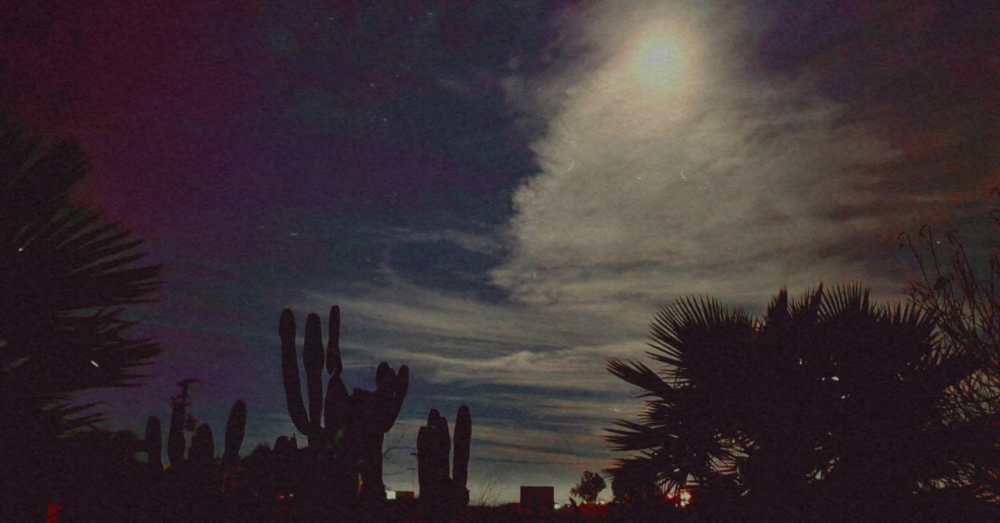
Let’s connect
I’m open to UX/UI, web, visual design, digital experience, usability, and implementation opportunities.
Email Anne